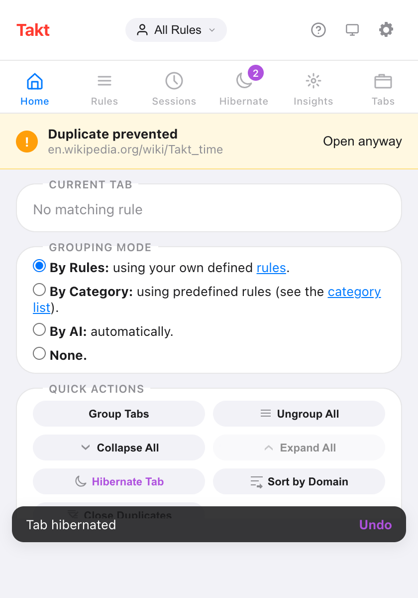

Short answer: open the Takt popup, choose By Category or By AI under Grouping mode, and Takt regroups your tabs straight away.
- Category: 20 fixed categories such as Development, Social and News. Unknown sites go to "Other".
- AI: Chrome's built-in model names the groups. It runs on your device.
- Both are free, up to 5 groups across all windows. Premium removes the cap.
Which grouping modes does Takt have?
Four, and one is active at a time. You pick it in the popup under Grouping mode.
| Mode | How tabs are grouped | Setup |
|---|---|---|
| By Rules (default) | By the URL rules you write | One rule per group |
| By Category | By site, into 20 built-in categories | None |
| By AI | By topic, with labels from Chrome's on-device model | None |
| None | Takt doesn't group tabs | None |
When you switch, Takt ungroups your tabs and regroups them in the new mode. Your choice is saved. Choosing None ungroups everything and stops grouping.

How does Group by Category work?
Takt looks only at each tab's hostname. It checks a built-in list of 77 well-known sites, each mapped to one of 20 categories:
Development, AI Tools, Docs, Productivity, Communication, Finance, Design, Shopping, Social, Entertainment, News, Gaming, Sports, Travel, Health, Food, Science, Career, Education and Cloud.
- Subdomains inherit. docs.github.com isn't on the list, so Takt tries github.com and files it under Development.
- The most specific host wins. aws.amazon.com goes to Cloud. amazon.com goes to Shopping.
- Everything else goes to Other. That includes your company intranet, new-tab pages and any site the list doesn't know. Other is always the last group.
The biggest category becomes the first group, then the next biggest. New tabs join their category group as they load. Takt reads no page content in this mode.
How does Group with AI work?
Takt sends each tab's title and up to 500 characters of its page text to Chrome's built-in Prompt API. The model runs inside Chrome on your machine. It returns a short label per topic, and Takt builds the groups.
- A group needs at least 2 tabs. A tab with no match stays ungrouped.
- Each run covers up to 100 tabs.
- Labels come from the model, so they can change between runs.
- Reading page text needs Takt's optional "All website access" permission. Without it, Takt groups on titles only and says so in the popup.
The model doesn't run on every new tab. In AI mode, tabs you open later wait for the next Group Tabs click or Alt+Shift+G.
What happens the first time I use AI mode?
Chrome may need to download its on-device model first. Takt starts the download when you click Group Tabs and shows the progress in the popup: "Preparing AI model…", then "Downloading AI model (N%)…", then "AI model ready. Grouping tabs…". Grouping continues on its own when the model is ready.
What if my computer can't run Chrome's AI model?
Takt still groups your tabs. It falls back to a similarity method that groups tabs sharing words in their titles and site names, and the popup shows "AI unavailable on this device."
The same fallback runs if the model takes too long: 2 minutes to load, or 8 seconds to answer. The fallback also handles new tabs in AI mode: a new tab joins the closest existing group, and never starts a new one.
What is the free 5-group limit?
On the free plan, Category and AI modes create at most 5 tab groups. The limit counts every tab group open in Chrome, across all windows, including groups you made by hand.
- If a run would go over, Takt keeps the largest groups and leaves the rest ungrouped.
- If you already have 5 groups, the popup says "You've hit the 5-group limit. Ungroup some tabs to create more."
- Rules mode has its own free limit of 5 rules instead.
Premium ($3/month or $30/year) removes the group cap.
Doesn't Chrome do this already?
No. Chrome's AI Tab organizer, which ran in the cloud and was only available in the US, was retired in 2025. Current Chrome doesn't group tabs for you. You can make, save and sync tab groups by hand, but sorting tabs into them is up to you.
Takt's AI mode uses Chrome's on-device Prompt API instead, so tab titles stay on your computer. Category mode needs no model at all.
| Chrome, no extension | Takt Category | Takt AI | |
|---|---|---|---|
| When it groups | Only by hand | On Group Tabs, and each new tab as it loads | On Group Tabs |
| Group names | You type them | Fixed: 20 categories + Other | Suggested by the model |
| Runs on device | No AI grouping | Yes, no model needed | Yes |
| Switch to your own rules | No | Yes, one click to Rules mode | |
| Price | Free | Free up to 5 groups; Premium unlimited | |
Where Category and AI fall short
- The category list is fixed. You can't add a site or rename a category. Rename a group in Chrome and Takt uses the built-in name again on the next run.
- Colors repeat. 20 categories share Chrome's 8 group colors. The name is what identifies a group.
- AI labels move. Run it twice and you may get different names.
- Profiles and schedules don't apply. They only work in Rules mode.
If you want github.com in a group called "Code" every time, write a rule. Not sure which rules to write? Let Takt suggest them.
Pick a mode. Watch 30 loose tabs become five named groups.
Add Takt to Chrome, freeFAQ
Is Group by Category or Group with AI free?
Yes. Both are free, up to 5 tab groups in total across all windows, counting groups you made by hand. Premium ($3/month or $30/year) removes the cap.
Does Takt's AI grouping send my tabs to a server?
No. It uses Chrome's built-in Prompt API, which runs on your device. See how Takt keeps data local.
What happens if Chrome's AI model is not available on my computer?
Takt groups tabs that share words in their titles and site names instead, and tells you the AI is unavailable on this device.
Can I add my own sites to a category?
No. The list is fixed and unknown sites go to Other. Use Rules mode to send a site to a group you name.